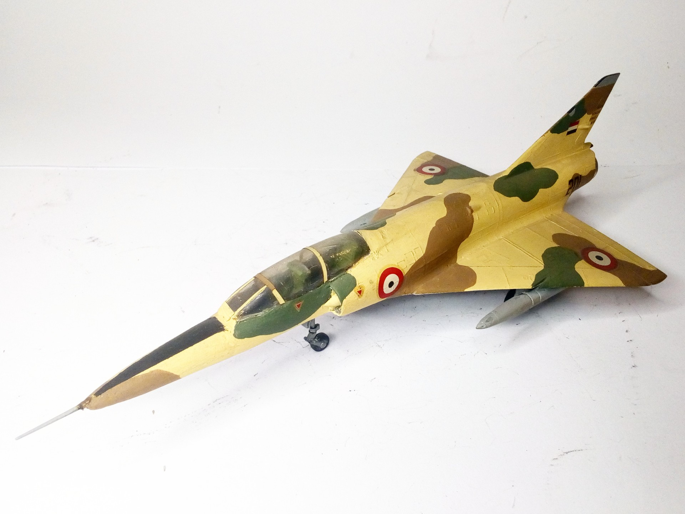
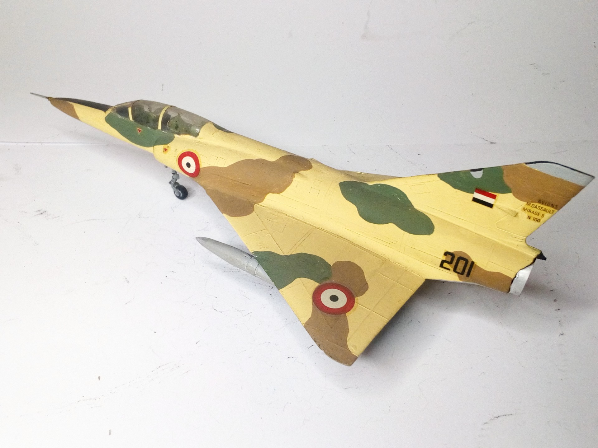

Aerei · scale model archive
Dassault Mirage III Twin Seater
Dassault Mirage III Twin Seater — Kit: conversion from Airfix, Scale: 1/72. I liked the appearance of the two seater Mirage so I did the conversion with…

Photo gallery

English description
I liked the appearance of the two seater Mirage so I did the conversion with a new vac-formed canopy
#1/72 #conversion #MirageIII
Descrizione italiana
Mi piaceva l’aspetto del Mirage biposto, così ho realizzato la conversione con un nuovo tettuccio termoformato. #1/72 #conversion #MirageIII